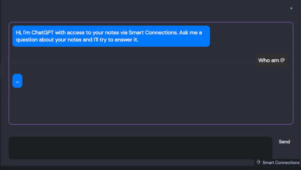
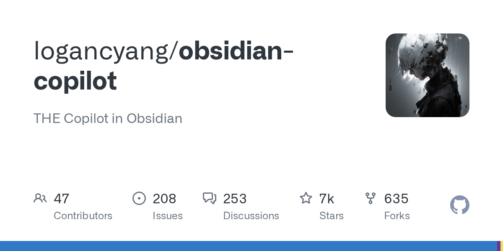
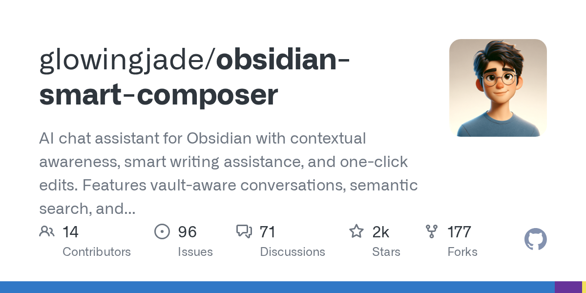
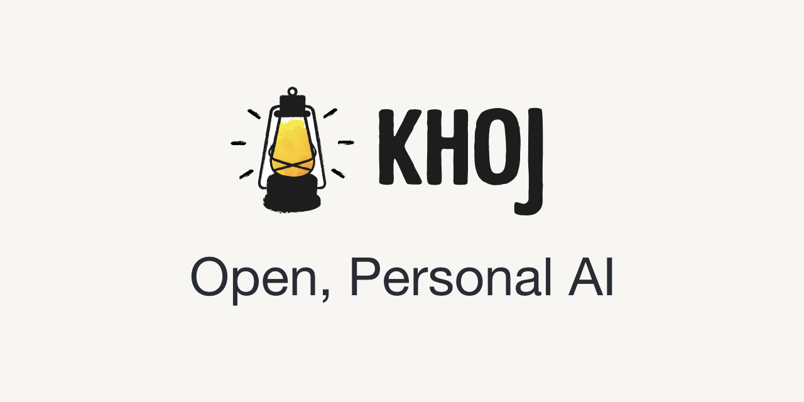

PLUGINS SURVEYED
12
4 main · 3 summarization · 5 niche
The 2026 ecosystem split into clear lanes — retrieval, chat-with-vault, editor-grade writing, cross-device second brain. Most users only need one from each of the first two columns. Smart Connections is the local-first retrieval default; Copilot is the polished chat; Smart Composer is Cursor-in-Obsidian; Khoj wins when "vault" extends past Obsidian. Everything else is niche or duplicative.

RETRIEVAL ⭐ 4.9kThe only plugin here that ships local on-device embeddings with zero config and keeps working offline once indexed[2].

VAULT CHAT ⭐ 6.8kMost polished local-LLM chat experience — native Ollama, "Relevant Notes" auto-context, broadest multimodal handling[14].

EDITOR + CHAT ⭐ 2.2kCursor-in-Obsidian. @file mentions feed exact files into context, @Vault triggers RAG, Apply-Edit accepts rewrites with one click[8].

SELF-HOST ⭐ 34kA self-hostable second brain reachable from Obsidian, Emacs, browser, desktop, phone, or WhatsApp — the most actively maintained of the bunch[9].
| Feature | Smart Connections | Copilot | Smart Composer | Khoj |
|---|---|---|---|---|
| Local embeddings out of box zero-config offline | ● on-device model[2] | ◯ Ollama + nomic-embed-text[6] | ◯ via Ollama / LM Studio[7] | ● self-hosted server[9] |
| LLM provider span cloud + local | local + 100+ APIs[1] | OpenRouter, OpenAI, Anthropic, Gemini, Cohere, Ollama, LM Studio[4] | OpenAI, Anthropic, Gemini, Groq, DeepSeek, OpenRouter, Azure, Ollama, LM Studio[7] | gpt, claude, gemini, llama, qwen, mistral[9] |
| RAG / vault chat conversational Q&A | ● Smart Chat (free in core) | ● Vault QA mode | ● @Vault · ⌘⇧⏎[8] | ● chat over docs + web[10] |
| Apply-Edit / inline rewrites writer surface | ✗ retrieval only | ◯ command palette quick actions | ● one-click Apply | ✗ chat-only |
| Multimodal context YouTube · PDF · images | ✗ | YouTube, web, PDF, EPUB, images | websites, images, YouTube transcripts | PDF, image, Word, Notion, org-mode |
| Agent / tool-use autonomous calls | ◯ external via MCP[19] | ◯ Plus tier: Agent mode | ● MCP support | ● custom agents, automations |
| Privacy posture cloud vs local default | local-first, offline after index | local with Ollama; cloud by default | local with Ollama; cloud optional | self-host or Khoj cloud |
| Pricing floor → ceiling | Free core · Pro via sub[3] | BYOK free · Plus $14.99/mo · $139.99/yr[5] | Free with own keys | Free OSS · managed cloud tiers |
A Lookup view + related-notes pane while you write. Local-first, offline after first build.
Three viable choices. Pick exactly one — never run two embedding indexes over the same vault.
@file mentions, Apply-Edit, inline rewritesCursor-style flow inside Obsidian. The chat-and-write boundary blurs.
Ships GPT-5 + thinking-model support; community template gallery.
Mostly redundant in 2026 — Copilot, Smart Composer, and Text Generator already cover this. Two niche cases below.
Running Smart Connections + Copilot Vault QA + Smart Composer RAG simultaneously means three separate embedding indexes over the same vault[13]. Pick one chat plugin; let Smart Connections handle the discovery sidebar.
First-build embedding indexing locally takes 20–30 minutes on a 5k-note vault. Index lives in .obsidian/ and updates incrementally afterward[15]. Plan for the first run, not the steady state.
Walks links from the current note and summarizes each linked note in a dialog[16].
One-shot summarize command with chunking + placement profiles[17].
Reusable summary templates with frontmatter overrides; community gallery, GPT-5 + thinking-model support[11].
Local-first sidebar. Zero config. Index first. Offline after.
Copilot for polish · Smart Composer for editing · Khoj if cross-device.
Pull nomic-embed-text + Qwen 2.5 / Llama 3. Point chat at localhost:11434.
Disable any second RAG index. Smart Connections owns discovery.
Expose retrieval to Claude Code or external agents. The 2026 advanced pattern.
Lowering capture friction across desktop, mobile, web, voice — and AI tag/metadata backfill across an existing vault.
Designing Obsidian YAML and tag taxonomies so external tools can reliably extract, query, and validate metadata.
Hybrid PARA+Zettel skeleton, Properties-first metadata, daily-note capture, MOCs over deep folders.
Hardcover for books, Simkl for film/TV; automate capture with Readwise + CrossWatch into Obsidian.
Opt-in (whitelist) frontmatter pattern; Quartz + ExplicitPublish as the closest free Obsidian-Publish match.
Six-angle expedition synthesis with Bases-first design and local-first AI as the unifying threads.